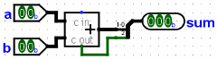
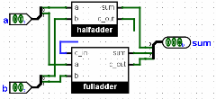

替换库
假设现在有两个本应执行相同功能的 Logisim 电路。在教学场景中，教师可能有一个包含参考解答的文件，以及若干包含学生作业的文件。这里以构建两位加法器的作业为例。
假设有两个文件，分别命名为master.circ和query.circ。每个文件都包含一个名为Adder2的电路（待测电路必须使用完全相同的名称），其外观如下。
Adder2 in master.circ Adder2 in query.circ 

如图所示，主电路使用 Logisim 的内置加法器，而查询电路使用两个子电路，分别表示半加器和全加器（它们本身由简单门构成）。在这个示例中，查询电路有一个明显错误：半加器的进位没有连接到全加器。
将测试电路构建到另一个文件test.circ中。在该文件里，通过| 项目 |→| 加载库 |→ | Logisim 库 |把master.circ作为 Logisim 库加载，并将其中的 2 位加法器作为子电路插入。直接执行这个电路即可得到参考解答的期望输出。
java -jar logisim-evolution.jar test.circ -tty table
但这里希望执行电路时加载query.circ，而不是master.circ。直接做法是打开 Logisim 并改为加载该库；也可以删除master.circ文件，并将query.circ重命名为master.circ。不过 Logisim 提供了方便的-sub选项，可以在当前会话中临时用一个文件替换另一个文件，而不会改动磁盘上的文件。
java -jar logisim-evolution.jar test.circ -tty table -sub master.circ query.circ
输出如下所示；它与上一节中的输出不同，因为测试电路中adder2所用的库已替换为包含错误的query.circ。
00 00 0E0 01 00 0E1 10 00 EE0 11 00 EE1 00 01 0E1 01 01 0E0 10 01 EE1 11 01 EE0 00 10 EE0 01 10 EE1 10 10 1E0 11 10 1E1 00 11 EE1 01 11 EE0 10 11 1E1 11 11 1E0
下一节： 其他验证选项。